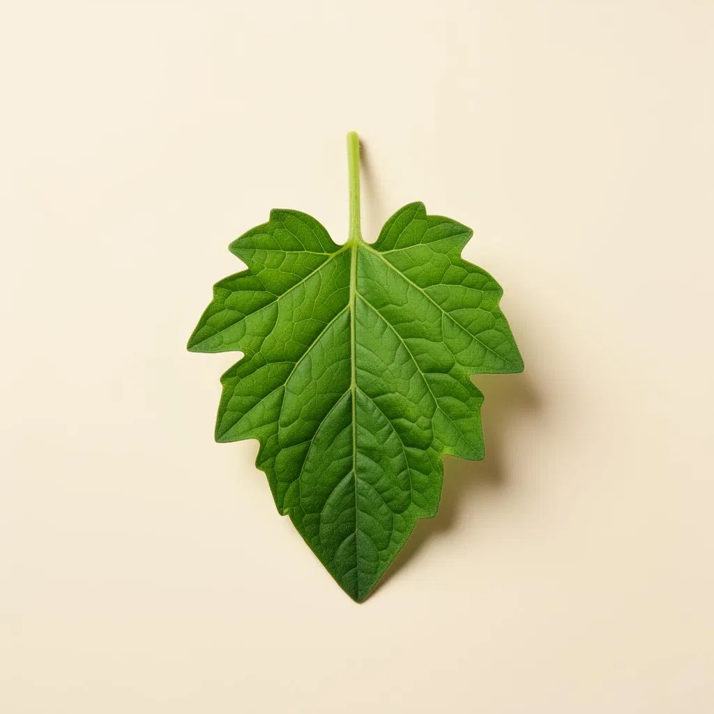
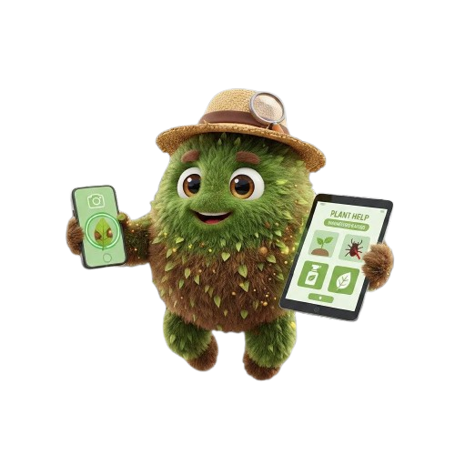

01 — Alimentação
Segurança Alimentar
Hortaliças saudáveis significam mais alimento fresco na mesa das famílias e das comunidades. Menos perdas na horta, mais comida produzida localmente.
Tire uma foto da planta. O AgroScan identifica pragas e doenças em hortaliças com visão computacional — offline, sem jargão, com tratamentos agroecológicos prontos.

dos estabelecimentos agrícolas brasileiros são de agricultura familiar
da produção agrícola mundial é perdida para pragas e doenças todo ano
de trabalhadores estão na agricultura familiar no Brasil
de mecanização no Nordeste, região com mais pequenas propriedades
Em qualquer tela
O AgroScan se adapta a qualquer dispositivo — basta uma câmera e conexão. Use no computador para registros, no tablet em campo ou direto no celular entre as fileiras de hortaliças.
O Problema
Segundo a FAO, até 40% da produção agrícola mundial é perdida para pragas e doenças todo ano — prejuízo de mais de US$ 220 bilhões. No Brasil, as perdas ultrapassam R$ 60 bilhões anuais (Embrapa).
Com apenas 3% de mecanização no Nordeste e sem assistência técnica na maioria dos municípios rurais, quem cultiva hortaliças precisa de uma solução no bolso — rápida, simples e sem depender de especialistas distantes.
dos agricultores familiares têm acesso à assistência técnica — no Nordeste, apenas 7,3%.
da mandioca brasileira vem da agricultura familiar — também 70% do feijão e 60% do leite.
da renda em 90% dos municípios pequenos vem da agricultura familiar.
ocupados pela agricultura familiar — 23% da área, 67% dos empregos rurais.
Fluxo do aplicativo
Quatro passos para obter diagnóstico e tratamento — sem precisar de internet.
Aponte a câmera para a folha, caule ou fruto da hortaliça com sintomas. Quanto mais nítida a foto, mais preciso o diagnóstico.
A IA processa a imagem direto no celular e identifica padrões típicos de doenças em hortaliças em menos de 2 segundos.
Veja o nome da doença ou praga em linguagem simples, com nível de confiança e ícones.
Receba sugestões agroecológicas adequadas a hortaliças — calda bordalesa, óleo de nim — com ingredientes locais.
Funcionalidades
Cada detalhe pensado para a realidade do agricultor brasileiro.
O app aprendeu a reconhecer doenças a partir de milhares de fotos de folhas de hortaliças. Quanto mais imagens, mais preciso fica.
Interface com ícones e textos curtos. Sem jargão técnico. Acessível a qualquer nível de escolaridade digital.
Tratamentos de baixo custo para hortaliças com ingredientes locais — calda bordalesa, nim, biofertilizantes — validados agronomicamente.
Redes neurais convolucionais detectam sintomas em folhas de hortaliças em menos de 2 segundos, direto no celular.
Doenças, pragas e desordens das hortaliças mais cultivadas pela agricultura familiar brasileira, em português.
Registros automáticos da sua horta salvos localmente com SQLite — consultas anteriores sempre à mão.

Impacto Esperado
01 — Alimentação
Hortaliças saudáveis significam mais alimento fresco na mesa das famílias e das comunidades. Menos perdas na horta, mais comida produzida localmente.
02 — Economia
Diagnóstico precoce em hortaliças reduz perdas e custos com defensivos, aumentando a produtividade da horta sem elevar despesas.
03 — Meio Ambiente
Tratamentos agroecológicos para hortaliças reduzem o uso de químicos pesados, protegendo solo, água e biodiversidade local.
04 — Inclusão
Funciona em celulares simples — leva ciência aplicada às hortaliças onde antes não chegava assistência técnica.
Perguntas frequentes
Respostas rápidas sobre o AgroScan, sua tecnologia e como ele apoia o agricultor.
O AgroScan é focado em hortaliças cultivadas pela agricultura familiar — tomate, alface, pimentão, pepino, abobrinha, couve, entre outras. Identifica as principais doenças foliares como míldio, oídio, pinta-preta, ferrugem e mancha-bacteriana, além de pragas comuns nessas culturas.
A IA foi treinada com milhares de imagens classificadas por especialistas, aprendendo padrões visuais distintos: manchas com bordas definidas e progressão são típicas de fungos e bactérias, enquanto amarelecimento uniforme costuma indicar deficiência. Quando há dúvida, o app mostra as duas hipóteses com nível de confiança.
Não. O AgroScan foi otimizado para funcionar bem em celulares simples e antigos, com Android 6.0 ou superior. O processamento de cada foto leva menos de 2 segundos.
Sim. Todas as recomendações agroecológicas — calda bordalesa, óleo de nim, biofertilizantes e caldas caseiras — são adequadas ao cultivo de hortaliças, validadas agronomicamente, com baixo custo e ingredientes encontrados localmente.
Não. Todas as fotos e o histórico de diagnósticos da sua horta ficam armazenados localmente no aparelho usando SQLite. Sua privacidade e seus dados são respeitados integralmente.
Sim. O AgroScan é um projeto voltado para inclusão tecnológica no campo e para apoiar quem cultiva hortaliças na agricultura familiar brasileira — totalmente gratuito.
Pronto para começar?
Junte-se aos agricultores familiares que já estão usando o AgroScan para proteger suas colheitas.